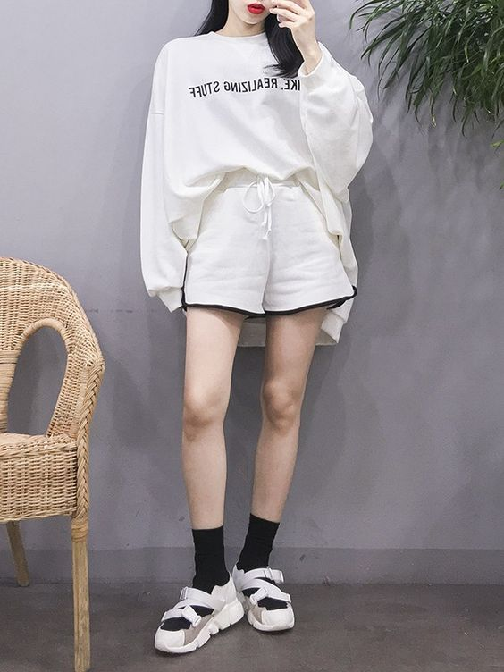

|
เทรนด์แฟชั่นที่กำลังมาแรงสุดๆ ณ จุดๆ นี้ไม่ใช่แฟชั่นแซ่บๆ แสบๆ คันๆ หรอกนะคะ
เพราะว่า เทอนด์ฮิตของสาวชิสในตอนนี้น่ะเป็นแฟชั่นสไตล์ Effortless
ที่เลือกแมทช์ไอเทมน้อยๆ แต่ใสาออกมาแล้วสวยดูดีแบบไม่ต้องพยายาม
****************************
สาวคนไหนที่เป็นสาวสายสตรีท ก็สามารถแต่งตัวสุดชิคด้วยเสื้อยวืดสีขาว
กางเกงยีนส์ขาบาน และรองเท้าผ้าใบสีดำ แล้วเพิ่มกิมมิคให้ลุคนี้ดูสดใสขึ้น
สาวชิสคนไหนที่ชอบแต่งตัวแบบง่ายๆ สบายๆ ก็อย่าลืมเปิดตู่เสื้ัอผ้าไปหยิบ
เสื้อยืดสีขาวมาใส่คู่กับกางเกงเอวสูงขากระดิ่งสีครีม แล้วเพิ่มลูกเล่นด้วย
รองเท้าผ้าใบหุ้มข้อสีเหลืองอ่อนแบบำไอเดียนี้ดูล่ะ
เสื้อยืดโทนสีน้ำเงิน เข้ากับกระโปรงยีนส์ทรงเอสีขาว
แมทช์ด้วยกระเป๋าผ้าลายตารางสีดำแดง รองเท้าแตะง่ายๆ
เดรสน่ารักๆ โทนสีดำลายจุดสีขาวเล็กๆ ได้ลุคละมุนใจใส่ไป
เดทหรือไปพบครอบครัวแฟนได้เลย

ลุคแบบง่ายๆ เสื้อโอเวอร์ไซส์โทนสีขาว กับกางเกงเอวสูง
รองเท้าผ้าใบสีขาวตัดกับถุงเท้าสีดำ เป็นลุคสบายๆ เหมาะกับใส่ในหน้าหนาว
เป็นสาวเรียบร้อยหน่อย เสื้อสีน้ำเงินกับกระโปรงสีครีมเอวสูงสวยๆ
รองเท้าผ้าใบสีดำ แมทช์กับเสื้อแจ็ํคเก็ตสีดำ ลุคชิลล์ๆ ชิคๆ สบายๆ
เสื้อแขนยาวโอเวอร์ไซส์สีดำลายสกีน แมทช์เข้ากับรองเท้าผ้าใบสีดำ
คู่กับถุงเท้าดำ เพิ่มความเก๋ด้วยหมวกสีดำ
เสื้อโอเวอร์ไซส์สีขาว แมทช์เข้ากับมินิสเกิร์ตสีดำ ถุงเท้าขาว
รองเท้าควรเป็น สีดำ-ขาว ก็ได้เป็นลุคสบายๆ ใส่อยู่บ้านก็ได้หรือจะออกไปเล่นเทนนิสก็ดี
เสื้อยืดสีเหลืองลายสกีนเล็กๆ แมทช์เข้ากับกางเกงยีนส์ทรงกระบอก
รองเท้าสนีกเกอร์ยสุคโปรง ลุคชิลล์ๆ ชิคๆ แต่งไปเที่ยวได้เลยค่ะ
เพิ่มความหนาวให้กับชุดเท่ๆ ชิลล์ๆ ในตัว ด้วยการสวมเดรส
แขนยาวผ้ามุ้งสีขาว ทับเสื้อโอเวอร์ไซส์สีดำ และกางเกงขาสั้นข้างใน
แมทช์เข้ากับรองเท้าผ้าใบสีขาว
|